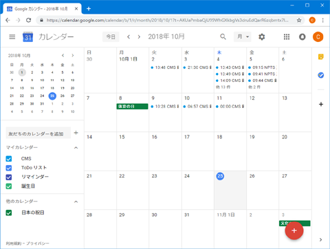
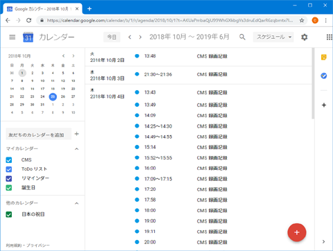
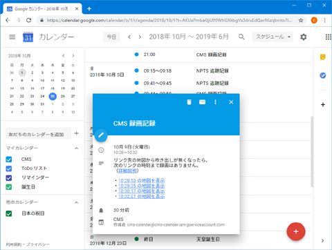
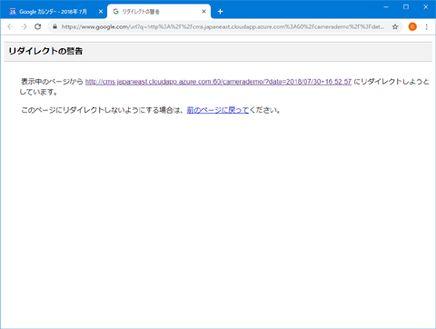
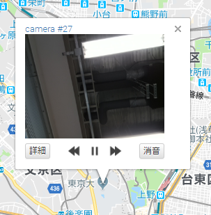
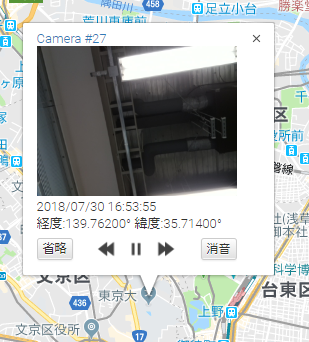
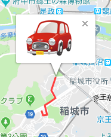
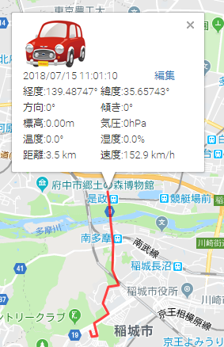
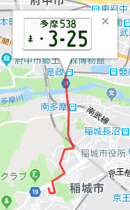
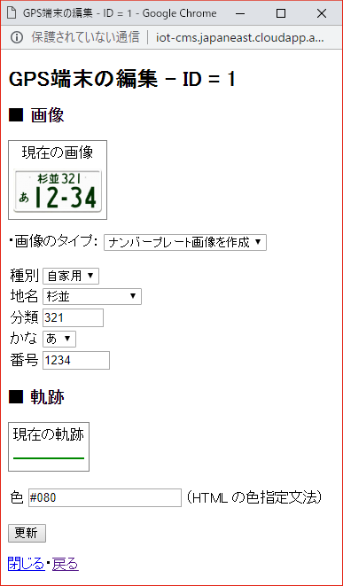

CMS / NPTS システム説明書 第２版
2018.08.27
2018.10.25
小島昌彦
== 目次 ==
■ システムの概要
■ システムの使い方
■ オブジェクト分析 (第２版で追加)
■ システムの概要
● 機能概要
- 本システムは、遠隔地にある複数のGPS端末と通信し、そのアップロードデータを保管・管理・閲覧・再生する
サーバシステムである。
- GPS端末としては、定点設置の動画中継カメラや車載GPS通信端末が想定されているが、特に制約はない。
- GPS端末からアップロードされるデータは、端末の位置や方向、標高や温湿度等の環境データであり、以降これらをメタデータと呼ぶ。
- それに加え、カメラ型の端末の場合は、撮影した動画データもアップロードされてくる。
- その代わり、カメラ型の端末の場合は、アップロードされるメタデータは端末の位置情報のみである。
- また、カメラ型の端末には人感センサーが搭載されていて、センサー感知時のみデータをアップロードするような機能も備わっている。
- これらのデータを全て保管した上で、閲覧要求により全ての保管データが閲覧・再生できるようになっている。
- 動画データの再生の際には、オブジェクト抽出と追跡を行う機能も併せ持つ。
● 閲覧概要
- アップロードされたデータを効率よく閲覧するには、特定日時におけるアップロードデータの有無が一覧できる必要がある。
- これを実現するため、Google Calendar APIを利用している。
- アップロードデータの有無をカレンダー上の該当箇所に明記し、下記の地図サイトへのアクセスリンクも貼っておく。
- 各端末のアップロードデータは、Google Maps APIを利用してGoogle地図上に表示される。
- 複数端末のデータが地図上の該当する位置に同時に表示される。
- カメラ型の端末の場合は、対応する時刻に録画された動画も再生される（音声付も可）。
- 再生の際には、オブジェクト抽出と追跡を行うか否かの指定もできる。
● 動作サンプル （第２版で追加）
Google Mapsを利用した地図の表示具合は以下のリンクから確認できる。
（本来であれば、上記にあるようにGoogle Calendar上に記録された地図サイトへのアクセスリンクを経由してアクセスする）
- cameramapエントリ
カメラ型端末用のサーバー・エントリである。
各端末で録画された動画が地図上で再生される。
- numberplate：エントリ
車載GPS型端末用のサーバー・エントリである。
各端末の移動軌跡が地図上に表示される。
（以下はサンプルなので、デモ用の速度で移動するが、実際にはもっと遅い）
● モジュール構成
- 本システムは（複数の）GPS端末と１つのWEBサーバーから構成され、
サーバー側は（歴史的経緯により）以下地図サーバーと録画サーバーの２つの部分に大別されている。
- GPS端末： サーバーに対し、自身の位置情報を含むメタデータをアップロードするクライアント・モジュール。
- カメラ型の場合は、位置情報に加え撮影した動画データもアップロードする。
- アップロードしたメタデータや動画データはサーバーに保管される。
- 地図サーバー： 各端末からのメタデータを保管し、閲覧時の入口となるサーバー・モジュールで、
２つのサーバー・エントリと１つのプログラムで構成される。
camerademo cameramap： 従来からある、カメラ型端末用のアップロード・閲覧用のサーバー・エントリ。- numberplate： 今回新設された、車載GPS型端末用のアップロード・閲覧用のサーバー・エントリ。
（Apacheの設定にて、上記camerademoエントリのAliasになっている）
- make_plate 指定された情報に基づきナンバープレートの画像ファイルを作成するプログラム。
- 録画サーバー： 各カメラ型端末からの動画データを保管し、閲覧用JavaScriptに動画を配信するサーバー・モジュール。
- 配信の際には、オブジェクト分析を行うか否かの指定ができる。
- 行う場合は、配信時に内部分析モジュールを呼び出して分析結果の動画を生成して配信する。（こちらがデフォルト）
- 行わない場合は、内部分析モジュールは呼び出さず、保管された原画をそのまま配信する。
● GPS端末動作環境 （第２版で追加）
- 本システムのGPS端末はRaspberry Piを用いて作成されている。
- コンピューター名： Raspberry Pi 3
- オペレーティング システム： Linux (Raspbian GNU/Linux 9.4)
- 開発言語： Python 2.7.13
- 利用システム： python-picamera （カメラ型端末の場合）
- カメラ： Raspberry Camera Rev. 1.3 （カメラ型端末の場合）
- 人感センサー： HC-SR501 （カメラ型端末の場合）
- GPS装置： 不明 （非カメラ型端末の場合）
● サーバー動作環境
- 本システムのサーバーはMicrospoft Azureサービスにより作成された仮想マシン上で稼働している。
- AzureサービスのサブスクリプションIDはbc04488e-d894-4b0d-92c0-8d90137874e8であり、
- サブスクリプション名は「IoT自動販売機スポンサードプラン」である。
- 本システムが稼働する仮想マシンは当該サブスクリプションにより作成された、以下のマシンである。
- コンピューター名： CMS
- オペレーティング システム： Linux (Ubuntu 18.04.1 LTS)
サイズ： Standard D2s v3 (2 vcpu 数、8 GB メモリ)- サイズ： Standard D4s_v3 (4 vcpu 数、16 GB メモリ) (*1)
- ディスク： 2048 GiB Standard SSD (*2)
パブリック IP アドレス： 40.115.142.231- パブリック IP アドレス： 52.246.163.255
- 仮想ネットワーク/サブネット： CMS-vnet/default
- DNS 名： cms.japaneast.cloudapp.azure.com
- サーバー側言語： php 7.2.7, python 3.6.6 (*3)
- クライアント側言語： JavaScript
- 利用システム： Google Calendar API, Google Maps API
(*1) サーバー側で録画画像に対するオブジェクト追跡処理をオンデマンドで行うために、計算能力を上げた。
(*2) 同じ理由で、録画画像の I/O 性能向上のため大きめの SSD を確保した。
(*3) python でオブジェクト追跡処理を行い、php からこのモジュールを呼び出している。
■ システムの使い方
● GPS端末の操作 (第２版で追加)
本システムの全ての元データを生成するのがGPS端末である。
従って、システムの稼働はGPS端末の起動から開始することになる。
〇 GPS端末の登録
- 本システムには複数のGPS端末を接続することができる。
- 接続された端末を識別するため、個々の端末に端末IDが振られる。
- なので、本システムに新たな端末を追加する場合は、新たな端末IDを取得する必要がある。
- 新たな端末IDは地図サーバーの idget.php にアクセスして取得する。
- 具体的なURLは http://cms.japaneast.cloudapp.azure.com:60/エントリ/idget.php である。
- エントリの部分は cameramap 又は numberplate である。
- 取得した端末IDは ~pi/CMS/cameraID 又は ~pi/CMS/numberID というテキストファイルに記述しておく。
- idget.php にアクセスすると、システム内部のIDカウンタが増加するので注意。
〇 カメラの起動 （暫定仕様）
- カメラ型端末を起動するには、ターミナルから起動コマンドをキーインすることによって行う。
- カメラ型端末の動作には以下の3つのモードがある。
- プレビューモード
- システムにデータをアップロードせず、ただカメラの撮影範囲をローカル・モニター上で確認するためのモードである。
- 起動コマンドは ~pi/CMS/preview である。
- センサーモード
- 人感センサーの感知情報をもとに、間欠的にデータをアップロードするモードである。
- 人感センサーの動作検知信号を検知すると、録画・録音とそのデータのアップロードを開始する。
- 録画・録音・アップロードの動作開始後、5秒間の間新たな検知信号がない場合は動作を停止し、次の信号を待つ。
- 動作中に、新たな動作検知信号が検知されると、動作停止時間を検知の5秒後まで延長する。
- 起動コマンドは ~pi/CMS/camera である。
- 常時撮影モード
- 人感センサーとは無関係に、常時データをアップロードし続けるモードである。
- 起動するには ~pi/CMS/camera.py の修正が必要となる。
- 17行目の SENSOR_TRIGGER = True を False に修正して、~pi/CMS/camera をキーインする。
〇 ナンバープレートの起動 （暫定仕様）
- ナンバープレート型端末を起動するには、ターミナルから起動コマンド ~pi/CMS/numberplate をキーインすることによって行う。
- ただし、現状のソフトウエアはGPS装置に対応していないので、ランダムな移動データをアップロードし続けるだけである。
〇 GPS端末の終了
- 端末ソフトを起動したターミナルで Ctrl-C をキーインすれば、GPS端末は終了する。
- また、SIGUSR1 を送ってもので、バックグラウンドで実行したような場合はこうする。
- コマンド ~pi/CMS/stop を実行すれば、SIGUSR1 を送れる。
〇 GPS端末の実行の様子
- ターミナル（以下はtelnet）を起動して、ログイン。

- 起動コマンドをキーイン。
- センサーが動きを感知して、5秒間（81フレーム）録画。
- センサーが長時間の動きを感知、16秒間（225フレーム）録画。
- Ctrl-C をキーインしてGPS端末を終了、センサー感知2回で総計22秒の録画。
● 閲覧操作
〇 Googleカレンダー
- 本システム内に保管されたデータを閲覧するには、まずGoogleカレンダーから入る。
- ただし、現状、本システムのGoogleカレンダーは一般公開されていないので、共有の登録処理が必要となる。
- 共有登録後、Googleカレンダーを開くと、カレンダー中にCMSのエントリが表示される。

- スケジュール表示を選ぶと、エントリの全体が分かりやすく表示される。
CMS 録画記録とNPTS 追跡記録というエントリが本システムのものである。

- ここで、エントリのどれかをクリックすると、以下のようなポップアップが出現する。

- ポップアップ中の表示したい時刻の地図を表示リンクをクリックすると、
外部サイト誘導の警告が出るので、リンク先をクリックする。

- 当該日時のGoogleマップが表示される。

〇 Googleマップ
- Googleマップ中では、各端末は地図上の該当する位置に吹き出しとして表示される。
以下はカメラ型端末の場合。

- カメラ型の場合、吹き出し中の詳細ボタンを押すと、その時点のメタデータが表示される。

- 同じく、吹き出しに表示された車載GPS端末の場合。
このケースでは、赤い線で移動した軌跡が表示されている。

- この端末では、吹き出し中の画像そのものを押すと、その時点のメタデータが表示される。

- 車載GPS端末の場合は、吹き出しに任意の画像を表示できる。
以下はナンバープレート画像を選択したケース。
詳細はカメラ・端末の設定を参照。

〇 表示・再生の制御
- 地図は任意の時点でのデータ再現（録画再生を含む）が可能になっている。
- 地図の上にある、時間移動バーで指定すればよい。
- ただし、この時間移動バー中の「現在の時刻に移動」は、実際の現在時刻より２分前の状態までしか復元できない。
- また、地図中にカメラ型端末が表示されている場合は、吹き出しで録画動画の再生制御が行える。
吹き出し中の << || >> の各ボタンで巻き戻し・一時停止・早送りが可能である。
- [消音]ボタンを押すと、再生音がミュートされる。
- さらに、カメラ型端末では、再生中の動画領域をクリックすると、録画再生専用のウィンドウが別途生成される。
- ここでの再生制御も、吹き出しと同様の操作が可能である。

〇 オブジェクト分析の制御 （第２版で追加）
- 録画再生の際に、オブジェクト抽出及び追跡を行うことができる。
以下は、オブジェクト分析を行って再生した「録画再生専用のウィンドウ」である。
抽出されたオブジェクト（歩く人）が各色の矩形でマークされ、追跡されている。
- オブジェクト分析を行うかどうかは、時間移動バーの左にある「検出チェックボックス」で指定して「時間移動」すればよい。
- カレンダーから地図を開いた時の初期状態は、「分析あり」になっている。
- ここで、「検出チェックボックス」をオフにして、[指定時刻に移動]ボタンを押せば、分析のない再生となる。
〇 カメラ・端末の設定
- 地図画面の右上の歯車ボタンを押すと、カメラ・端末の設定画面が別ウィンドウに表示される。
- サーバー・エントリがcamerademoの場合は、以下のような画面が表示され、新たなカメラの追加や既存カメラの録画サーバーの変更ができる。

- サーバー・エントリがnumberplateの場合は、以下のような画面が表示され、新たなGPS端末の追加や既存端末の画像や軌跡の変更ができる。

- 以下が、numberplateの場合の端末編集画面である。
- 録画機能をもった端末（カメラと同等）の場合、

- ナンバープレート画像を作成する場合、

- 特定の画像をアップロードする場合、

■ オブジェクト分析 （第２版で追加）
● 実装方法の検討
オブジェクト分析は別途 OpenCV を利用して開発された分析モジュールを、どのようにCMSに取り込めば良いか
いくつか検討すべき事項があったので、ここに記述しておく。
- どこで分析するか？
カメラ、サーバ、クライアントの３候補がある。
- カメラで分析する場合
- 負荷分散から考えると理想的。
- 撮影時に処理してしまうので、検出能力の改善が過去の動画に反映できない。
- また、原画に加工を加えるのは避けたい。
- 検出結果の画像は原画とは別のものとなる。
- これをサーバにアップロードする必要がある。
- アップロード負荷が現状の２倍になる。
- フレームレートが現状の半分になる。
- サーバで分析する場合
- 現状では、複数カメラを１つのサーバで録画しているので負荷が集中。
- ただし、サーバ構成を変更すれば負荷分散は可能。
- 処理タイミングは、録画時、閲覧時、定期バッチ等自由度が高い。
- 検出能力の改善時は、処理タイミングに応じて反映可能。
- クライアントで分析する場合
- クライアント側に OpenCV の環境が必要。
- 現状の再生言語 JavaScript から、検出言語 Python は呼び出せない。
- なので、ソケットやファイルを介した間接連携が必要になる。
- そのため、ブラウザだけで閲覧可能という利点が失われる。
- クライアントが PC ならある程度の環境構築が可能だが、スマホ系の場合どうか？
- 検出能力の改善時は、検出ソフトのアップデートのみで即反映可能。
- いつ分析するか？
撮影時（＝録画時）、オンデマンド（＝閲覧時）、定期バッチ等が考えられる。
- 録画時に分析する場合
- 負荷分散から考えると理想的。
- ただし、検出能力の改善が反映できない。
- 閲覧時に分析する場合
- サーバで分析するなら、負荷分散に対して検討が必要。
- クライアントで分析するなら、環境構築に対して検討が必要。
- 検出能力の改善時は、検出ソフトのアップデートのみで即反映可能。
- 定期バッチで分析する場合
- 負荷分散は比較的簡単。
- 録画直後の動画に対する分析が次期バッチ時まで不能。
- 検出能力の改善時は、再度の（大量）分析バッチ処理が必要となる。
上記の検討事項を踏まえ、以下の実装方法を採用した。
- 分析処理は録画サーバーで行う。
- 分析処理は動画の再生時に（オンデマンドで）行う。
- 分析処理の結果は一時ファイルとし、永続保持はしない。
● 分析方法の概要
- オブジェクト抽出はフレーム間差分により前景・背景判定による前景抽出方法を採用した。
- 使用した背景判定モジュールは OpenCV 内蔵の BackgroundSubtractorKNN である。
- BackgroundSubtractorKNN についてはこちらを参照のこと。
- 上記で検出した前景をオブジェクトと見做し、これを個々に追跡し矩形表示で強調した。
- 使用した追跡モジュールは、オリジナル開発の Particle 追跡モジュール である。
〇 Particle 追跡モジュール
Particle 追跡モジュールは、概念的には以下の手順で追跡を行う。
- まず、追跡対象の特徴を把握する。今回は追跡対象の中心部の色を特徴と見做すこととした。
- 追跡対象のある位置を追跡開始位置とし、その近辺に確率分布に従ってランダムに探索粒子をばら撒く。
- ばら撒いた各探索粒子の位置の（或いは周辺の）画像データを把握している追跡対象の特徴と比較評価する。
- その比較評価を数値化し、当該探索粒子の尤度（ゆうど）とする。
- 各粒子の尤度を重さと見做したときの、全ての探索粒子の重心の位置を計算する。（加重平均）
- 対象物はその重心位置に移動したと判断する。
- 以降、同様な処理を繰り返し、対象物を追跡する。
2018.08.27
2018.10.25
小島昌彦